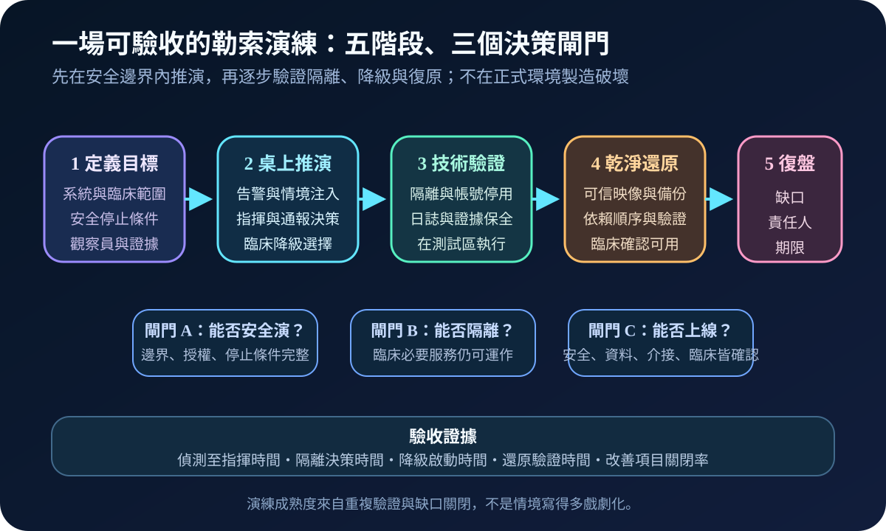
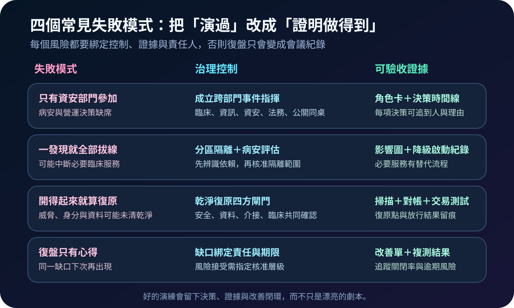

健康台灣深耕計畫-資安治理 · 2026-08-17
醫院勒索演練如何不只演資安：從事件指揮到乾淨復原
作者：Dr. William｜醫療資訊與資安治理實務工作者
醫療資安治理勒索軟體演練臨床持續運作事件指揮
這項能力要解決的是：勒索事件發生時，醫院不只要阻止攻擊擴大，還要在病人安全、證據保全與復原速度之間做出一致決策。演練的真正產物不是劇本，而是壓力下仍可執行、可追查的跨部門協作。
名詞解釋：桌上演練先驗證決策，不在正式環境冒險
桌上演練用情境注入測試角色與決策；事件指揮建立單一指揮者、工作線與事實版本；隔離限制橫向移動，但要先評估臨床依賴；臨床降級是在系統不可用時，以紙本、唯讀或替代流程維持必要照護。證據保全確保日誌、映像與時間線可用；乾淨復原則是從可信來源重建、重設憑證並經安全與臨床共同放行，不只是把伺服器重新開機。
規劃：先寫清楚目標、範圍、角色與停止條件
規劃應先選一個核心服務與一條臨床流程，盤點 AD／身分、DNS、網路、介接、醫療設備與備份等依賴，再指定事件指揮、臨床營運、資訊、資安、法務、公關及供應商窗口。演練前要核准邊界、測試資料、觀察方式與安全停止條件；驗收可看偵測至指揮時間、隔離決策時間、降級啟動時間、還原驗證時間，以及改善項目是否按期關閉。

實作：把一次活動做成可重複的控制生命週期
- 準備：建立基準架構、聯絡樹、角色卡、降級手冊與證據清單。
- 推演：依序注入異常登入、加密擴散、介接中斷與外部詢問，要求團隊說明誰能決定隔離、何時啟動降級、如何維持一致訊息。
- 驗證：在授權測試區實際操作帳號停用、網段隔離、日誌匯出、備份還原與介接檢查，不在正式環境散布惡意程式。
- 復原：確認可信還原點，重建身分與憑證，依臨床依賴順序上線；安全、資料、介接與臨床四方確認後才放行。
- 復盤：每個缺口綁定責任人、期限、風險接受層級與複測日期。
風險：最危險的是把快速反應誤當成正確反應
只讓資安部門參加，會漏掉病安與營運決策；未評估依賴就全面拔線，可能放大臨床中斷；開得起系統就宣告復原，也可能把受污染身分或資料帶回來。演練應逐步增加難度，明確區分模擬與實作，並由觀察員記錄決策品質，而不是用「大家很忙」代替驗收。

可執行清單
- 事件指揮者與臨床決策者是否明確，代理人是否可立即接手？
- 隔離前是否能看見核心服務、身分、網路與介接依賴？
- 臨床降級流程是否實際走過，紙本回補與對帳責任是否清楚？
- 證據保全是否避免破壞原始資料，並維持完整時間線？
- 乾淨復原是否包含憑證重設、惡意跡象檢查、資料對帳與臨床驗收？
- 改善事項是否有責任人、期限、風險接受與複測結果？
結語
演練應被視為醫院營運控制，而不是年度資安表演。只要每次縮短一個關鍵決策時間、關閉一個真實缺口，醫院面對勒索事件時就多一分可用的韌性。
參考資料
- CISA｜#StopRansomware Guide（查閱：2026-08-17）
- NIST SP 800-61 Rev. 3｜Incident Response Recommendations and Considerations for Cybersecurity Risk Management（2025-04；查閱：2026-08-17）
內容說明
本文依健康台灣深耕計畫相關治理內容整理，並參考公開事件回應指引整理實務風險與演練框架；不取代主管機關正式公告、法律意見或個別醫院風險評估。